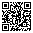

tbr-brd.github.io/music-browser
Mit der Handykamera scannen – die Seite öffnet sich direkt im Browser.
Fragen oder Ideen? Projekt auf GitHub · ☕ Buy me a coffee
Favoriten und Einstellungen werden nur in diesem Browser gespeichert.